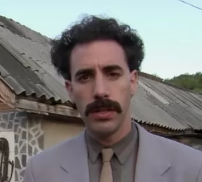
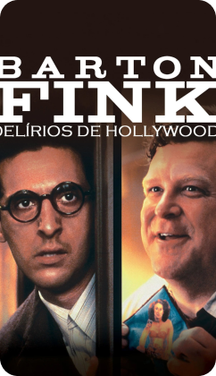
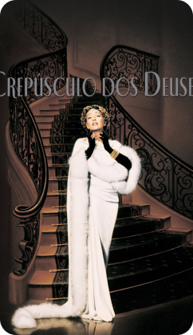

Hollywood sendo Hollywood
João escolheu quatro películas que contam sobre o brilho das luzes reflete nas câmeras enquanto os atores interpretam a arte do cinema. Atrás das cortinas, histórias são contadas e sonhos ganham vida.
-

Barton Fink | 1991 | Ethan & Joel Coen | 1h56 | Comédia, Drama
-
A Malvada | 1950 | Joseph L. Mankiewicz | 2h18 | Drama
-

Adaptação. | 2002 | Spike Jonze | 1h55 | Comédia, Drama
-

Crepúsculo dos Deuses | 1950 | Billy Wilder | 1h50 | Drama, Noir